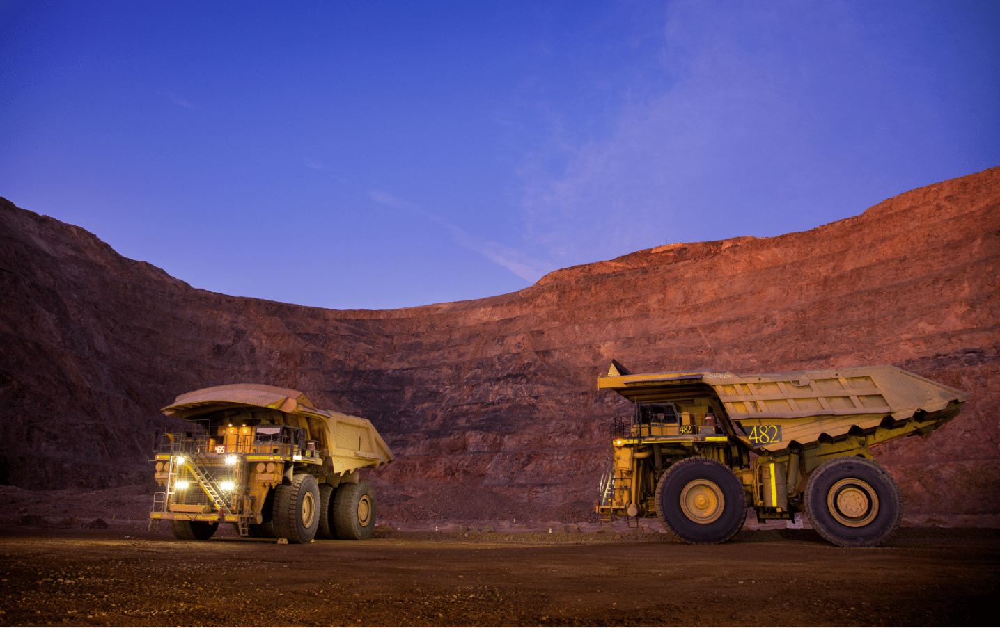
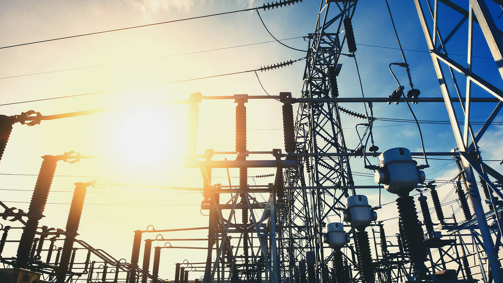
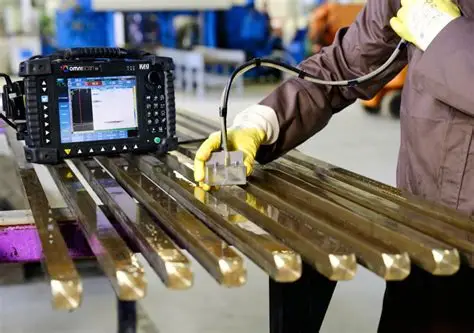

Oil & Gas
Non-Destructive Testing (NDT) is indispensable in the oil and gas sector, where pipelines, tanks, and offshore rigs face corrosion, erosion, and fatigue. Techniques like ultrasonic testing, radiography, and magnetic particle inspection detect flaws before they escalate. Asset Integrity Management ensures compliance with international standards, extending asset life and reducing costly downtime.
← Back to Industries
Marine

Marine and offshore assets endure saltwater corrosion, wave fatigue, and extreme weather. NDT methods such as ultrasonic thickness gauging, eddy current testing, and infrared thermography are adapted for underwater inspections. Asset Integrity Management integrates risk assessments and preventive maintenance to safeguard ships, offshore rigs, and wind farms.
← Back to Industries
Mining

Mining operations rely on heavy machinery and structural assets that endure constant stress. NDT helps detect early defects in welds, pressure vessels, and conveyor systems, while asset integrity programs provide condition monitoring and shutdown planning to minimize downtime. This proactive approach enhances safety and extends the lifespan of mining equipment.
← Back to Industries
Power & Utilities

In power generation and distribution, NDT ensures the reliability of turbines, boilers, and transmission systems. Techniques like phased array ultrasonic testing (PAUT) and time-of-flight diffraction (TOFD) are used to detect flaws in critical components. Asset Integrity Management strategies combine preventive maintenance and advanced inspection technologies to assure uninterrupted energy supply.
← Back to Industries
Manufacturing

Manufacturing depends on consistent quality control across raw materials, production processes, and final products. NDT methods such as liquid penetrant testing, radiography, and acoustic emission safeguard against defects that could lead to recalls or safety hazards. Asset Integrity Management ensures structural reliability and compliance, reducing waste and reinforcing consumer trust.
← Back to Industries